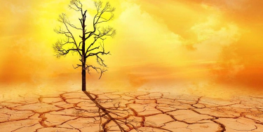

Encore une fois, un autre phénomène similaire à l’article sur l’espoir de sauvez la planète (nous vous invitons d’ailleurs à aller le voir), c’est le réchauffement climatique. L’une des conséquences de l’actions humaine sur le globe mais c’est quoi le réchauffement climatique ?

Le réchauffement climatique c'est quoi ?
C’est un phénomène global de transformation du climat caractérisé notamment par une augmentation générale des températures. Ce phénomène est principalement provoqué par l’action humaine. Il modifie aussi par la même occasion l’équilibre météorologiques ainsi que l’écosystème. Parmi les actions humaines ont comptent l’industrialisation, le dégagement de gaz à effets de serre mais aussi la pollution. Il y a encore une très grande liste qui influe sur le réchauffement climatique, mais nous n’allons pas l’écrire ici.
Les causes du réchauffement climatique sont surtout les gaz à effet de serre qui proviennent principalement de la production des énergies chauffage et électricité mais aussi le carburant pour les transports surtout pour la voiture.
C’est bien gentil de parler des choses qui font mal mais comment pouvons nous lutter face au réchauffement climatique ?
Comment faire face à cet énorme combat qui malheureusement s’offre à nous ?

Comment lutter face au réchauffement climatique ?
Il faudrait donc réduire la production de gaz à effet de serre, pour cela, il faudrait commencer déjà par utiliser uniquement des énergies renouvelables et non polluantes comme par ex : l’énergie des éoliennes, les panneaux solaires ou encore l’énergie hydraulique. On pourrait aussi songer à privilégier l’utilisation des transports communs dans les villes ou même bien mieux le vélo ou ses pieds. Utilisez des autres moyens de transports, tout sauf la voiture. Afin de réduire ce réchauffement climatique, il faudrait que chaque être humains réagisse et prennent conscience que ses actes vont se répandre sur des générations de générations.
Qu’en pensez-vous est-il trop tard ? Avons-nous encore le temps pour préparer notre approche ?
Page d'accueil : Retour à l'accueil